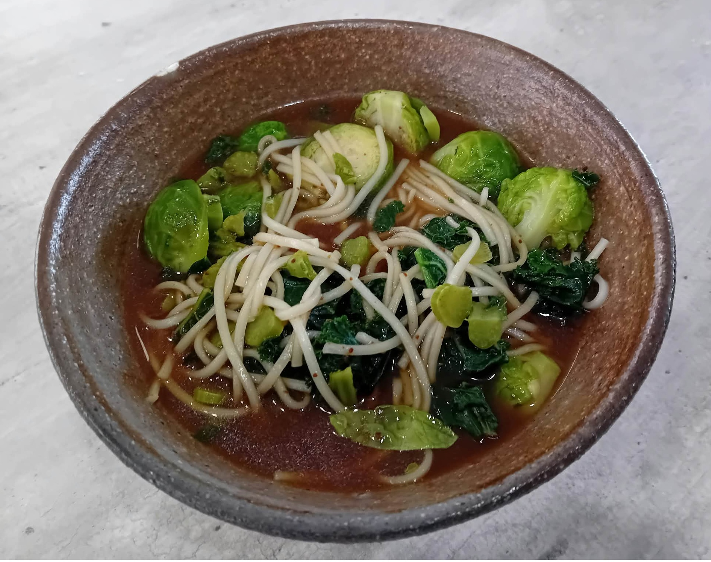

Miso polévky
Napadlo by vás snídat polévku? V našich končinách to není zrovna běžné a mnohým z nás může taková představa připadat zarážející. Přitom je to skvělá volba, zvlášť v chladných a sychravých měsících. Horký vývar po ránu prohřeje a dodá sílu, což je přesně to, co naše imunita potřebuje.
Myšlenku snídaňových miso polévek asi nejépe rozvádí Eva Cikrytová z projektu Jíme Jinak. Její přístup ke stravování můžu všeobecně doporučit, i když ne se vším se dá souhlasit. Jako ostatně vždy je potřeba informace konzumovat s kritickým nadhledem. I tak obsahuje web Jíme Jinak spoustu užitečných informací.
Miso polévky samozřejmě nemusíte jíst jen k snídani. Tato technika bude stejně dobře fungovat například k přípravě rychlé večeře po návratu z práce.
Postup je velmi jednoduchý a zabere celkem jen kolem patnácti minut. Začnu tím, že v malém kastrolku rozehřeju zhruba půl litru vývaru. To odpovídá jedné porci polévky - množství si libovolně upravte podle počtu strávníků.
Vývar připravuju jednou týdně ve větším množství. Část nechám v lednici a postupně odebírám. Zbytek zamrazím a dle potřeby rozmrazuju. Kdykoliv tak mám k dispozici čerstvý vývar pro přípravu miso polévky nebo čehokoliv jiného - vývar má v kuchyni široké využití. Více podrobností se můžete dočíst v mém článku Kuře. Použít lze samožřejme stejně tak dobře i hovězí nebo jakýkoliv jiný vývar.
Zatímco se vývar rozehřívá, očistím a nakrájím trochu zeleniny. Co je zrovna v sezóně a mám k dispozici. Dva nebo tři druhy. Skvěle se hodí mrkev, zelí, pórek, kadeřávek, růžičková kapusta, naklíčené mungo fazolky, hrášek. Ale použít lze opravdu cokoliv.
Osobně potřebuju v polévce mít i sacharidy, abych se zasytil a neměl po chvíli hlad. Použít lze jakoukoliv předvařenou přílohu (těstoviny, kroupy), pokud mi zbyla v lednici. Jak už asi víte z ostatních článků, pro úsporu času vždy rád vařím větší množství surovin najednou a zbytky pak různě kombinuju a tvořím z nich další jídla. Pokud zrovna nic připraveného od minule nemám, jednoduše vhodím trochu suchých těstovin (udon nebo rýžové nudle, a podobně) do vařícího vývaru se zeleninou a uvařím je přímo v polévce.
Cílem je mít na konci všechny složky (zeleninu i těstoviny) uvařené na skus - ani syrové, ani rozvařené. Různé druhy zeleniny se vaří různě dlouho, i podle toho, na jak velké kusy je nakrájíte. Je proto potřeba je do vývaru vhazovat postupně. Chce to trochu zkušeností, ale postupně si vybudujete intuici, co se vaří jak dlouho. Myslete taky na to, že zelenina i těstoviny měknou i po odstavení z plotny, zbytkovým teplem. Některá zelenina je dokonce natolik jemná, že nepotřebuje vařit vůbec - stačí ji nechat v horké polévce krátce prohřát.
Jakmile je polévka tak akorát provařená, stáhnu ji z tepla a nechám krátkou chvíli zchladnout. Jednak aby se nespálila miso pasta, a jednak se stejně příliš horká nedá pohodlně jíst.
Nakonec vmíchám trochu miso pasty. Jakožto fermentovaná potravina je zdravá pro naši střevní mikroflóru a navíc dodá polévce spoustu chuti. Pokud vám miso nesedí, zkuste začit s malým množstvím a postupně přidávat. Případně ji zcela vynechte - vývar je výborný i samotný.
Miso pastu nakupuju od firmy kojibakers. Vyrábí jak tradiční, sójové miso, tak i lokální verzi z hrachu, čočky, pohanky nebo jahel.
Aby se pasta v polévce dobře rozpustila, naberte ji na lžíci a tu ponořte těsně pod hladinu polévky v hrnci. Vidličkou ji v troše vývaru pořádně rozmíchejte. Hrudky pasty se vám tak nerozutečou, dokud se zcela nerozpustí.
A to je vše! Polévku sliju do misky a jím ještě horkou. Vidličkou vyjídám zeleninu a těstoviny a střídavě usrkávám horký vývar.
